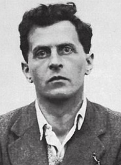

Ludwig Wittgenstein, um dos filósofos mais influentes do século XX, dedicou sua vida a investigar a natureza da linguagem e sua relação com o pensamento e a realidade. Suas ideias, muitas vezes contraintuitivas e desafiadoras, continuam a inspirar e a intrigar filósofos e pensadores de diversas áreas.
Frases de Ludwig Wittgenstein
"O que se pode dizer, pode ser dito claramente; e aquilo de que não se pode falar tem de ficar no silêncio."
"O mundo é a totalidade dos fatos, não das coisas."
"A linguagem é um instrumento."
"Uma proposição lógica não descreve nenhum estado de coisas."
"A filosofia não é uma teoria, mas uma atividade."